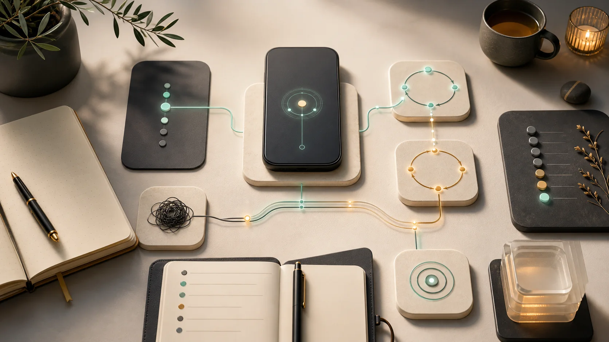

Вытащишь один сценарий из тумана
- Выберешь не “всё со мной”, а одну повторяющуюся ситуацию.
- Увидишь, где запускается старая реакция и чем она заканчивается.
- Получишь фокус, который можно удерживать неделю и месяц после.
Это не курс “про себя вообще”. Ты приносишь одну повторяющуюся ситуацию: где срываешься, замираешь, откладываешь или теряешь ясность. Вместо ещё одного конспекта у тебя будет разобранный повтор, бот или AI-контекст, записи встреч, Q&A и месяц, в котором система возвращает тебя к выбранному сценарию.
На старте ты приносишь конкретный эпизод из жизни. К концу недели он проходит через демо-консультацию, разбор, дневники, вопросы группы и ретро, а не остаётся красивым выводом в голове.
Если ты уже теряешь выводы между сессиями и дневниками — начинай с Telegram. Если AI помогает в моменте, но не становится твоей памятью — иди в Codex-поток.
Умеешь пользоваться Telegram — этого достаточно. Бот держит утренние и вечерние вопросы, дневники, ретро и выбранный сценарий.
Подходит, если есть MacBook на Apple Silicon и ChatGPT Plus или Cursor. Собираем папку, правила и рабочий AI-контекст.

Для тех, кто всё понимает на сессии, а через три дня снова живёт по старому сценарию. Без технического стека: один повтор, разбор, вопросы, дневники и ретро через бота.
Для тех, кто уже пользуется AI, но каждый раз заново объясняет ему себя. Собираем личную папку контекста, правила работы, модели и режим без постоянного переключения контекста.
В каталоге IMT уже есть обезличенные истории: какой сценарий повторялся, что человек считал “здравым смыслом” и какой новый шаг появился после разбора.
Был инсайт, была ясность, были заметки. Потом пришла обычная неделя, и система не выдержала.
Берём один сценарий и переводим его в вопросы, разбор, ретро и следующий шаг.
 повторяемый контур
повторяемый контур
Текстов много, повторов много, а решения и следующего шага нет.
Достаём из дневников повтор: что запускает реакцию, чем она заканчивается и какой шаг попробовать.
 фокус на повторе
фокус на повторе
Он помогает в моменте, но не знает историю, старые реакции, решения и ограничения.
В Codex-потоке собираем AI-контекст, правила и режим работы без вечного старта с нуля.
 память решений
память решений
Интерес к методу есть, но длинная работа 1:1 пока кажется слишком большим шагом.
Делаем короткий цикл: один эпизод, демо-консультация, разбор, дневники, ретро и Q&A.
 цикл на неделе
цикл на неделе
Codex, Cursor, ChatGPT, папки, модели и заметки помогают точечно, но не складываются в рабочую память.
Собираем одну папку, правила AGENTS.md, модельный режим и понятный вход в работу.
 единая память
единая память
Не хочется покупать длинный путь вслепую. Хочется увидеть, что происходит на живом материале.
Интенсив даёт короткий вход: один сценарий, группа до 20 человек, опросники на входе и выходе.
 проба метода
проба метода
Упрощённая версия self-audit: отвечаешь на пять коротких вопросов и видишь, начинать с Telegram-бота или идти сразу в Codex-контекст на MacBook.
Ты выходишь не с пониманием, а с повторяемым контуром: что заметить, куда записать, какой шаг сделать.
Что запускает повтор, что он защищает и какой новый выбор появляется.
Живой материал, на котором видно, как запрос превращается в разбор.
Старое понимание, новая связка, следующий шаг и открытые вопросы.
Минимальная система, которая возвращает к выбранной ситуации после интенсива.
Список вопросов под твой сценарий, чтобы день не распадался на заметки.
Где система выдержала неделю, где сломалась и что проверять дальше.
Формулируешь один повтор, который хочется проверить на интенсиве.
Без домашних заданий: достаточно прийти с живым запросом.
Можно просто наблюдать, где в неделе повторяется старый сценарий.
Техническая настройка не нужна: достаточно Telegram.
Карта работы, вход в бот, опросник и выбор предварительного сценария.
Один живой запрос, запись, summary, старое понимание и новый выбор.
Смотришь вводные ролики и отмечаешь, что откликается в твоём сценарии.
Утренний вопрос, дневник, просмотр записи и первый маленький шаг.
Бот возвращает к выбранному повтору, записи дают язык для разбора.
Разбираем первые сбои: где бот помогает, а где сценарий уводит в старое.
Проверяешь новый выбор в обычном дне и фиксируешь наблюдения.
Смотришь записи, отвечаешь на вопросы и готовишь материал для ретро.
Собираешь, где система выдержала неделю, а где нужен новый вопрос.
Ретро недели, ответы на вопросы и план следующего месяца.
Проверяешь MacBook на M и доступ к ChatGPT Plus или Cursor.
Собираешь 2-3 заметки или файла, где виден повторяющийся сценарий.
Отмечаешь, где AI уже помогает, но не помнит контекст.
Ничего настраивать заранее не нужно: стартуем вместе.
Codex App, рабочая папка, входные файлы и базовая структура памяти.
Правила памяти, компактизация, модели, генограмма и работа без потери контекста.
Смотришь ролики по Codex, компактизации, моделям и сбору контекста.
Кладёшь живой материал в папку и проверяешь первые правила AGENTS.md.
Уточняешь файлы, модели и вход в работу без постоянного старта с нуля.
Разбираем ошибки структуры, контекст, mobile Codex и выбор модели.
Добавляешь генограмму, изображения или файлы под выбранную задачу.
Смотришь записи и доводишь папку до состояния рабочего входа.
Фиксируешь, что AI уже помнит, а что ещё нужно вынести в правила.
Где AI-контекст уже работает, где распадается и какой следующий шаг фиксируем.
Формулируешь один повтор, который хочется проверить на интенсиве.
Без домашних заданий: достаточно прийти с живым запросом.
Можно просто наблюдать, где в неделе повторяется старый сценарий.
Техническая настройка не нужна: достаточно Telegram.
Карта работы, вход в бот, опросник и выбор предварительного сценария.
Один живой запрос, запись, summary, старое понимание и новый выбор.
Смотришь вводные ролики и отмечаешь, что откликается в твоём сценарии.
Утренний вопрос, дневник, просмотр записи и первый маленький шаг.
Бот возвращает к выбранному повтору, записи дают язык для разбора.
Разбираем первые сбои: где бот помогает, а где сценарий уводит в старое.
Проверяешь новый выбор в обычном дне и фиксируешь наблюдения.
Смотришь записи, отвечаешь на вопросы и готовишь материал для ретро.
Собираешь, где система выдержала неделю, а где нужен новый вопрос.
Ретро недели, ответы на вопросы и план следующего месяца.
Чем быстрее разберёшься с вопросом, который управляет жизнью, тем меньше его нужно скрывать. С AI проще начинать: это не человек, он не смотрит на тебя и не может осудить.
Да. Это и есть демо-консультация: из группы выбирается один человек, который за смелость получает разбор ценностью $200. Остальные учатся на живом материале.
Это исследование себя: инструмент, методика и навык видеть повторяющуюся реакцию. Мы не лечим травму, а учимся распознавать сценарий и переводить его в действие.
У каждого есть зона, которая не устраивает на 100%: деньги, отношения, энергия, апатия, цель, которая не достигается. Интенсив помогает прислушаться к реакциям и выбрать направление.
Если умеешь пользоваться Telegram, тебе достаточно первого потока. В этом и разница: Telegram-поток работает с телефона, Codex-поток требует MacBook на M и AI-инструменты.
Я не использую личные данные участников: это противоречит этике, и у меня есть более интересные дела, чем читать чужие переписки с ботом. При этом всё, что попадает в интернет, уже проходит через Apple, Google, Telegram, ChatGPT и посредников. Раз уж битва за абсолютную приватность проиграна, лучше извлекать из цифрового следа пользу для своего развития.
Не сложный стек ради стека, а минимальная конструкция под твою ситуацию. Если через три дня всё снова как раньше, проблема не в инсайте, а в отсутствии держателя контекста.
Телефон и Telegram. MacBook, Codex и Cursor не нужны.
Опросник, утренние и вечерние вопросы, дневники, ретро недели.
Один повтор не исчезает в заметках, а возвращается в ежедневный выбор.
MacBook на M, ChatGPT Plus или Cursor, Codex App.
Папка контекста, AGENTS.md, правила компактизации, модели.
AI не начинает с нуля и держит выбранный сценарий между сессиями.
Оба типа потока стоят одинаково. Разница не в “уровне духовности”, а в старом способе справляться: дневники и бот в Telegram или AI и личный AI-контекст на MacBook.
Старт 3 июля · 15 мест осталось
Старт 17 июля · 12 мест осталось
Человек приходит не с “проблемой вообще”, а с повтором: план ломается — и вместе с ним ломается состояние.
Идеи могут годами уходить в папки “на потом”. Сдвиг начинается с короткого живого шага, а не с идеальной системы.
Инструменты могут стать способом не применять к себе то, что уже понятно. Поэтому система должна служить действию.
Внешняя оценка может звучать как приговор. Разбор возвращает факты доверия, собственную ценность и свой стандарт качества.
Если выводы теряются между сессией, дневником и неделей — иди в Telegram-поток 3 июля или следующий Telegram-поток 31 июля. Если AI уже рядом, но каждый раз начинает с нуля — выбирай Codex-поток 17 июля.
Купить через Telegram